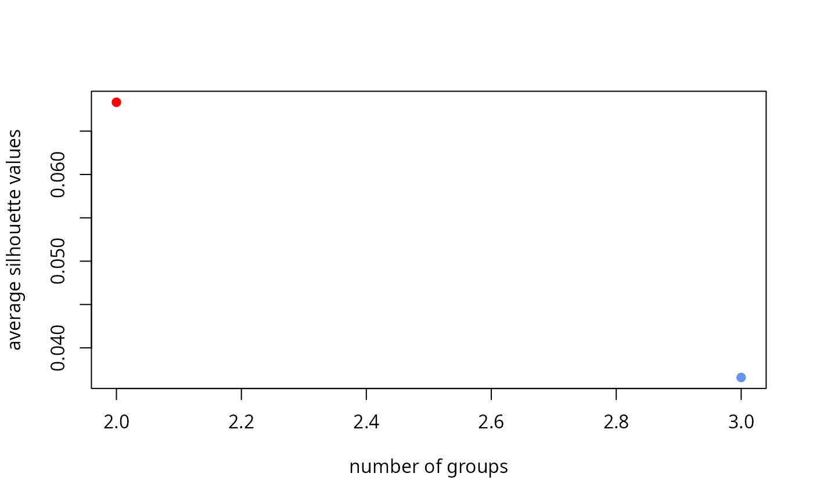

Group TALEs by k-medoids clustering of their pairwise distance
Source:R/classification.R
tales_group_kmedoids.RdClusters TALE arrays with pam for every
candidate k in k_range, then returns the tales
object the distances were computed from with the chosen clustering's
result attached as its group column.
Usage
tales_group_kmedoids(
x,
tale_distances,
k_range = NULL,
k = NULL,
seed = 7,
plot_silhouette = TRUE
)Arguments
- x
A tales object – the one whose comparison produced
tale_distances.- tale_distances
A tale_distances object, as returned by
tales_compare_distal(). A plain data frame with the same columns is also accepted and coerced.- k_range
Integer vector of candidate values of
kto evaluate. Each must be between 1 and one less than the number of arrays being grouped (cluster::pam()'s own requirement).- k
See Details.
- seed
Passed to
set.seed()before everycluster::pam()call, so the same candidate always clusters the same way.- plot_silhouette
Logical, whether to draw the silhouette-vs-k plot.
Details
The clustering is computed from tale_distances, but the result belongs on the
tales object the distances were computed from, so that is what comes
back. group is a recognised tales column, validated as constant within
an array – it is an array-level property, like seqnames.
Taking x rather than returning a bare lookup table is what makes the
correspondence checkable: the array names in tale_distances must be the array
names in x, and this is the only place that can be verified. A mismatch
is an error rather than a silent NA group, because a partly-grouped
object is the kind of thing that fails much later and confusingly.
The bare mapping is still one line away if you want it:
unique(out[c("array_id", "group")]).
Unlike a hierarchical tree, PAM has no single structure that can be cut at
an arbitrary k after the fact: k is a parameter of the clustering
itself. So one clustering is computed per candidate in k_range, and k
picks which of those to keep:
ka single number uses that candidate directly.k = "auto"picks the elbow of the silhouette-vs-k curve, the point after which adding groups stops improving the fit much. It uses the first step of the Kneedle algorithm only, a practical heuristic; check the silhouette plot when the choice matters.k = NULL(the default) shows the silhouette plot and asks for a number at the console, but only wheninteractive()isTRUE. In a script, a test or a vignette render,k = NULLerrors instead of blocking on input that will never arrive.
See also
tales_group_hclust(), the alternative method;
tales_compare_distal(), which produces both inputs.
Other pairwise distances:
[.pairwise_distances(),
as.matrix.pairwise_distances(),
distances_assert_square(),
distances_restrict(),
is_pairwise_distances(),
pairwise_distances(),
rvd_dna_specificity,
tales_assign_domain_codes(),
tales_compare_distal(),
tales_compare_functal(),
tales_domain_distances(),
tales_group_hclust(),
tales_tale_distances(),
validate_pairwise_distances()
Examples
x <- tales_from_telltales(system.file("extdata", "tellTaleExampleOutput",
package = "tantale"))
cmp <- tales_compare_distal(x)
#> Computing a distance matrix between TALE parts amino acid sequences using:
#> DECIPHER
#> Deriving domain substitution costs that meet the triangle inequality (Minkowski
#> distance between domain distance profiles).
#> Aligning 4 TALE arrays pairwise (6 pairs).
#> Finished computing TALE and repeat relatedness.
grouped <- tales_group_kmedoids(cmp$tales, cmp$tale_distances,
k_range = 2:3, k = 2)

#> Number of groups is decided based on the provided value of k: 2
unique(grouped[c("array_id", "group")])
#> # A tibble: 4 × 2
#> array_id group
#> <chr> <int>
#> 1 ROI_00001 1
#> 2 ROI_00002 2
#> 3 ROI_00003 1
#> 4 ROI_00004 1